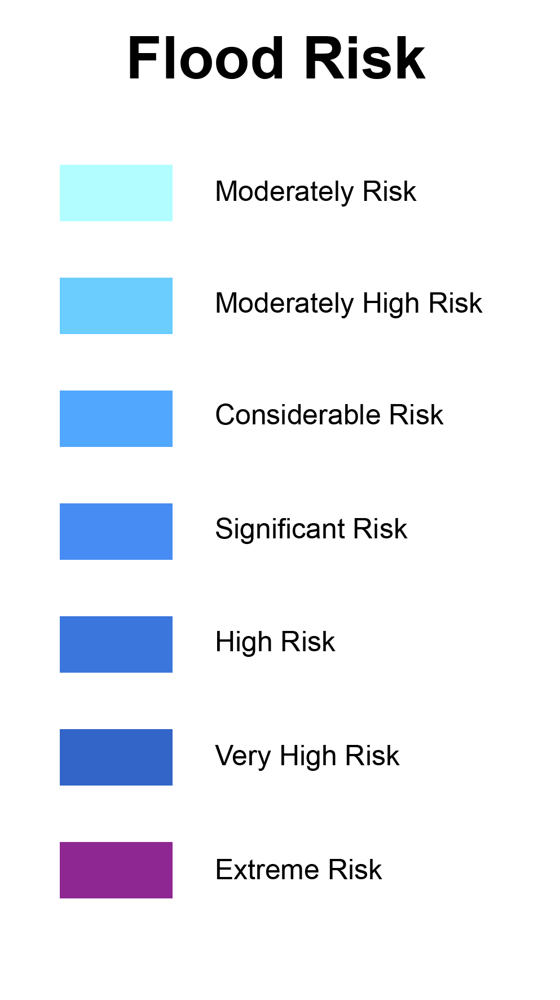
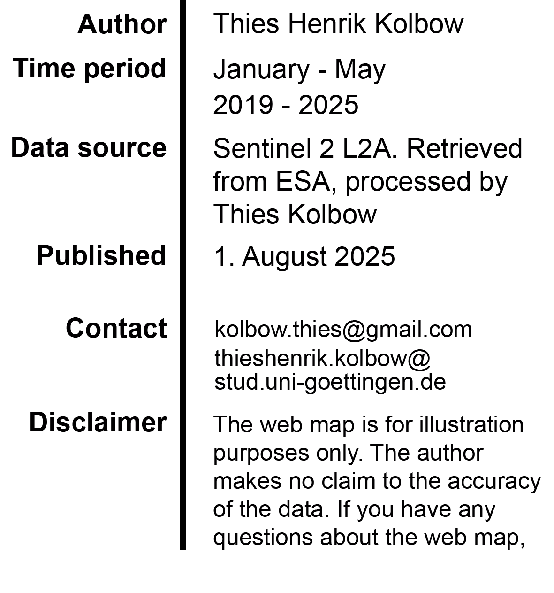

Flood Risk Map: Shana drainage area, Namibia
Select your Constituencies:
Tsandi
Steinhausen
Ruacana
Outapi
Otjombinde
Otjiwarongo
Otjinene
Otavi
Oshikuku
Oshikango
Ongwediva
Ongenga
Onesi
Ondombe
Omuntele
Omundaungilo
Okongo
Okalongo
Ohangwena
Mashare
Gobabis
Etayi
Epembe
Elim
Anamulenge
Aminius
Kalahari
Total Flood extent
 